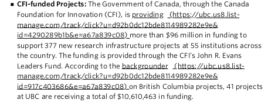
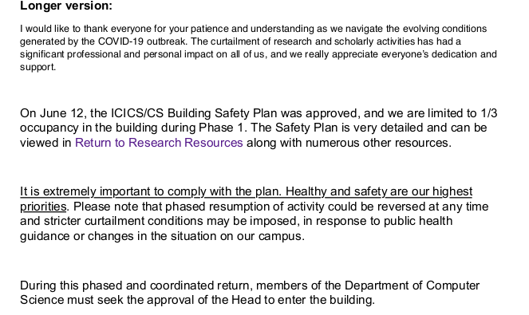
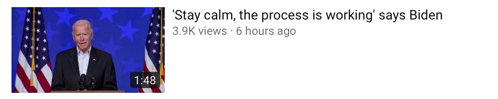
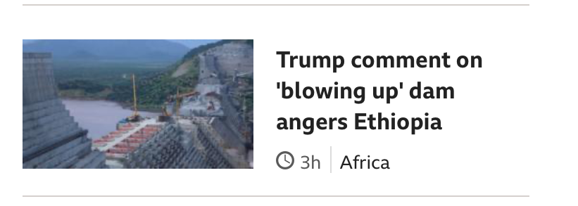

(November 10, 2020) The Brazilian clinical trial for a Chinese Covid-19 vaccine has been suspended after health authorities reported a "severe adverse" incident. The news of its suspension in Brazil came shortly after a rival vaccine developer, the US pharmaceutical company Pfizer, said its own vaccine candidate had shown 90% effectiveness. (BBC News)
(November 10, 2020) Josep Borrell, the European Union’s foreign policy chief, said on Monday that “we are ready” for a Biden administration to engage the EU on joint action against the challenges posed by Beijing. Borrell said the EU also hoped to work with Washington on the South China Sea and East China Sea, 5G technology, disinformation issues and artificial intelligence. “Negotiations are at an advanced stage. Our priority issues continue to be market access, level playing field and sustainable development,” European Commission executive vice-president Valdis Dombrovskis said. (SCMP)
(November 10, 2020) EU regulators filed anti-trust charges against Amazon and opened a probe into its e-commerce business practices. US e-commerce giant is accused of using data to gain an unfair advantage over sellers using its platform. Amazon "may have used sensitive data [on a] big scale to compete against smaller retailers," she wrote on Twitter, adding that it was now up to the company to respond. (DW News)
(November 9, 2020) EU diplomats say he does not believe that negotiations are on the right path. After an EU-UK summit in October proved unsuccessful, he said the bloc would "seek the necessary compromises on both sides in order to reach an agreement and we will do so right up until the last day it's possible to do so." ... Officials for the bloc worry that Johnson's Internal Market Bill is yet another manner in which their British counterparts would try to work around complying with the treaty. ... Frost is referring to what is at the core of Brexit: the United Kingdom's complete separation from EU regulation. In the future, UK officials want to distribute government aid to businesses according to the prime minister's wishes — and without interference. The same applies to fishing in waters claimed by Britain. ... This is the week when the decisions will be made. To reach a trade agreement with complicated details at this point in time, both sides would have to make fundamental concessions, cross their own red lines and show flexibility. ... The additional £200 billion (€222 billion/$263 billion) in subsidized wages would cover up the immediate economic consequences of Brexit on January 1, observers say. (DW News)
(November 9, 2020) The peace deal takes effect on Tuesday from 01:00 local time (21:00 GMT Monday). President Putin said the agreement would include an exchange of war prisoners, with "all economical and transport contacts to be un-blocked." The Armenian leader in Nagorno-Karabakh, Arayik Harutyunyan, said he gave his agreement "to end the war as soon as possible". Russia has a military base in Armenia, and the two countries are members of the Moscow-led Collective Security Treaty Organization. At the same time, Moscow also has strong ties to Azerbaijan, which is being openly backed by Turkey, a Nato member. Russia has been selling weapons to both Armenia and Azerbaijan. (BBC News)
(November 9, 2020) President Donald Trump has sacked Defence Secretary Mark Esper, announcing on Twitter that the top US official has been "terminated". Christopher Miller, the current head of the National Counterterrorism Center, will take on the role immediately. Mr Esper clashed with the president over the White House's use of the military to quell public unrest during protests over racial injustice earlier this year. (BBC News)
(November 9, 2020) The Nyingchi-Ya’an project will eventually join two other sections of the Sichuan-Tibet railroad to form a direct link between the two regions' capitals. Another section, between Nyingchi and the Tibetan capital of Lhasa, is due to open next year; the third, between Ya’an and the Sichuan capital of Chengdu, opened in December, 2018. (Apple Daily)
(November 9, 2020) Prospective buyers told Apple Daily that they suspect debt-laden Evergrande may be running low on cash to lend as mortgages. She said such sudden changes of lenders is uncommon, and advised buyers to be cautious with the new arrangement and the potential risks. The original designated vendor, Profit Concept Finance Limited, had offered a maximum of 90% loan of the sale price, and planned to waive interest charges for the first year. The change to ORIX will cost buyers an extra 0.5% to 1% in interest, although that may be offset by the decision to waive a 1% handling fee. (Apple Daily)
(November 9, 2020) China has offered Jamaica loans and expertise to build miles of new highways. Throughout the Caribbean, it has donated security equipment to military and police forces and built a network of Chinese cultural centres. The Caribbean markets are generally small, and most of the nations there lack the sizable reserves of minerals and other raw materials that often draw Chinese attention. China's efforts in the region are part of its global strategy to forge deep economic ties and strong diplomatic relationships around the world, in part through the building of major infrastructure projects under its ambitious Belt and Road Initiative. "China's objective is to gradually eliminate the recognition of Taiwan," Bernal said. The total climbs by US$62 billion with the addition of assistance to Venezuela, much of it given in return for long-term oil supplies. In November 2019, the Jamaican government announced that it would stop negotiating new loans from China as part of its effort to reduce debt quickly ... But Jamaican officials say outstanding Chinese loans are not putting an extraordinary burden on the country. The pandemic allowed China to strengthen these relationships further by donating or selling personal protective equipment, in what has come to be called "mask diplomacy." (Strait Times)
(November 20, 2019) The U.S. Congress has been moving to adopt targeted sanctions on Nord Stream 2. The bill sponsored by Senator Cruz is cleverly targeted on pipeline laying vessels which lay pipelines at over 100 feet. Of course, there is always the possibility of a Trump veto, unimaginable as such a move would have been under any prior Republican president. But given that any such veto would anger Republicans such as one of the sanctions bill’s sponsors Senator Cruz, it is unlikely a President under threat of impeachment would want to upset any of the senatorial jurors who have the capacity to convict him. (The Globalist)
至於炮台上的人，原該應懂得點測量的；等到看見了敵船，東西南北，對准水線，亦要算准時刻，約摸船還未到的前關一秒鐘或兩秒鐘，三秒鐘，就得把炮放出。等到炮子到那裡，卻好船亦走到那裡，剛剛碰上，自然是百發百中，萬無一失。(官場現形記)
(November 9, 2020) By starting off her speech by remembering the atrocities of Nazi Germany and the rise and fall of the Berlin Wall, Crane noted the chancellor "linked those examples of tyranny to the healing role that America had played" in Germany. ... Trump repeatedly criticized Germany over its defense spending, complaining that Berlin has failed to meet the NATO spending target of 2% of economic output. ... Nord Stream 2, the controversial gas pipeline project linking Russia and Germany, will continue to be a sore subject. Like Trump, Biden is also expected to oppose the pipeline, adding to the mounting pressure on Merkel to drop the project. (DW News)
(November 9, 2020) "I don't believe the US intends to return to the strategic patience [toward North Korea] of the past," Kang told reporters after visiting the Korean War Veterans Memorial. "It should be made based on various progress and achievements made the past three years." ... South Korean President Moon Jae-in said on Monday that the country will solidify bilateral relations and develop the process of building peace on the Korean peninsula. (DW News)
(November 9, 2020) Some people caused the fire because they thought that, because of the fire, they would automatically get transferred to other European Union countries. Obviously that couldn’t work. ... We don’t have a social housing policy. We do provide recognized refugees with the ability to find a house and apply for rent subsidy which is available to them. But they also need to apply and find a job and work. We don’t provide life-long benefits to people not working. ... We have cost the smugglers around 100 million euros this year because of the fact that we’re protecting our borders and there’s a lot of money to be made in creating propaganda. People that are coming to Greece from a safe country, under the asylum law, their claims could be inadmissible. (DW News)
(November 9, 2020) The Singapore authorities have criticised the "irresponsible" actions of some property investment educators and real estate agents who use scare tactics ... so that worried owners will pay thousands of dollars to sign up for their investment courses or sell their Housing Board flats to invest in private or commercial properties. (Strait Times)
(November 9, 2020) Taiwanese law enforcement traced and identified the culprit of the attack, 25-year-old Mo, through CCTV footage. The three other defendants were arrested outside the court, while waiting for Mo’s appearance. According to the defendants, a Chinese man surnamed Chen instigated the act and offered a reward of NT$30,000 (US$1,049) to two suspects surnamed Lee for an initial inspection. Chen paid the cousins and Mo NT$15,000 for damaging the restaurant and another NT$30,000 after completing the act. ... China uses different tactics to intervene in Taiwanese domestic affairs and pay locals to do the dirty work, he added. (Apple Daily)
(November 9, 2020) The Liberal government is set to make an announcement today about their long-promised plan to expand high-speed broadband access to rural Canada. "The government will accelerate the connectivity timelines and ambitions of the Universal Broadband Fund to ensure that all Canadians, no matter where they live, have access to high-speed internet," said Gov. Gen. Julie Payette, reading from the speech. (CBC)
(November 9, 2020) Hongkongers living in Guangdong province can from Tuesday apply for subsidised medical consultations for chronic illnesses at a top university hospital in Shenzhen for only 100 yuan. The scheme, set up by the government, was launched at the University of Hong Kong-Shenzhen Hospital to help patients who were unable to return to the city for public clinic appointments because of the Covid-19 pandemic and resulting mandatory quarantine requirements on both sides of the border. (SCMP)
(Accessed November 9, 2020) The State Department has launched an unprecedented global effort to bring home our citizens from every corner of the globe and has repatriated thousands of Americans from multiple countries. Our teams, working around-the-clock in Washington and overseas, will bring home thousands more in the coming days, from every region of the world. ... We continue to recommend U.S. citizens use commercial travel options and follow the advice of local authorities. We will continue working with our international partners to combat the outbreak, provide assistance to those who remain overseas, and minimize the risks to our citizens around the world. (Department of State)

Undoubtedly. It is quite clear that the colonel was a cool and desperate man, who was absolutely determined that nothing should stand in the way of his little game, like those out-and-out pirates who will leave no survivor from a captured ship. (The Adventures of Sherlock Holmes)
The body exhibited no traces of violence, and there can be no doubt that the deceased had been the victim of an unfortunate accident, which should have the effect of calling the attention of the authorities to the condition of the riverside landing-stages.” (The Adventures of Sherlock Holmes)
(November 8, 2020) The president-elect is set to launch a Covid-19 task force on Monday led by ex-surgeon general Vivek Murthy and ex-FDA commissioner David Kessler. (SCMP)
(November 8, 2020) Joe Biden’s US election victory will encourage China to try and renegotiate Donald Trump’s trade deal, viewed in Beijing as being “twisted” in Washington’s favour, according to advisers to the Chinese government. (SCMP)
(November 8, 2020) Mainland officials may also still hope to draw on the acute conflicts and political uncertainty caused by the presidential election to portray America as a failed democracy in a propaganda campaign, Wu said. They hoped such conflicts and uncertainty would remain so they could continue with the propaganda, Wu said. (Apple Daily)
(November 8, 2020) With up to 80% of Americans expressing uneasiness about China, Biden would unlikely steer the U.S. back to its previous engagement approach, said Kenneth Chan, an associate professor of political science at Hong Kong Baptist University. Biden’s administration would be busy handling COVID-19 and race issues — tasks it sees as the highest priorities — for the first six months. (Apple Daily)
(November 8, 2020) “It might even lead to countries like Japan, Germany and India becoming permanent members at the United Nations Security Council, slowly lessening China’s [attempt at] hegemony at the U.N.,” Wu said. “China has taken advantage of globalization on the one hand, but on the other hand pursued policies under the framework of economic nationalism. The international community finds this unacceptable,” he added. Biden might restart negotiations for the Trans-Pacific Partnership — a major initiative of the Barack Obama administration that tied free trade to labor and environmental standards — with the goal of isolating China and pressuring the country into opening its markets, said Hung Ho-fung, a political economy professor at John Hopkins University. (Apple Daily)
(November 7, 2020) "Congratulations to President-Elect Biden and Vice President-Elect Harris," Gates tweeted. "Thank you to the election officials and campaign workers who worked tirelessly to ensure a record number of Americans could cast a ballot and have it counted during such an challenging time for our country." In May, Gates told The Wall Street Journal that he warned President-elect Trump in December 2016 about the risks of a pandemic in the country, urging all of the candidates to make it a national priority. In late April, the Bill & Melinda Gates Foundation announced it would give an additional $150 million to fight COVID-19, bringing its total contribution to $250 million. Gates also recently laid out a plan on how to reopen the U.S. economy, citing concerns the virus will cost the global economy “tens of trillions of dollars.” (Fox News)
(November 6, 2020) Hong Kong's new hotline for residents to report violations of a controversial national security legislation received 1,000 tips hours after launching, ... Residents will be able to send such information over e-mail, texts or the Chinese social messaging platform WeChat, the police statement said. Since then, Hong Kong's protests have largely dissipated, some political groups have disbanded and a handful of people have been arrested under the new law. (Strait Times)
(Sep. 29, 2020) The country is the world’s largest producer of carbon dioxide (CO2), accounting for 28% of global emissions, and its move may inspire other countries to follow suit. But observers warn that China faces daunting challenges in reaching its goals. Kicking its coal habit will be particularly hard. ... He says the new targets “won’t likely let us to stop at 1.5° Celsius [of global warming],” the preferred target set in the 2015 Paris agreement. “But below 2° might still be consistent with [Xi’s] announcement.” China has not yet revealed details of how it will do this. But a research group at Tsinghua University presented a $15 trillion, 30-year road map on 27 September that calls for ending the use of coal for electricity generation around 2050, dramatically increasing nuclear and renewable power generation, and relying on electricity for 80% of China’s energy consumption by 2060. ... Last year, the carbon-heavy fuel accounted for about 58% of China’s total energy consumption and 66% of its electricity generation. A recent study by Myllyvirta and colleagues found that China’s coal-fired generating capacity grew by about 40 gigawatts (GW) in 2019, to about 1050 GW. Another 100 GW is under construction and coal interests are lobbying for even more plants. “This is all despite significant overcapacity in the sector,” with plants running at less than 50% of capacity and many coal-power companies losing money, the study said. ... China’s interest in climate change has waned in recent years, due to the slowing down of economic growth and the U.S. withdrawal from the Paris agreement,” (Science)
 
越想越恨。忽然想起前兩天有人說浙、閩總督納賄賣缺一事，又有貴州巡撫侵佔餉項一事，還有最赫赫的直隸總督李公許多驕奢罔上的款項，卻趁著胸中一團飢火，夾著一股憤氣，直沖上喉嚨裡來；就想趁著現在官階可以上折子的當兒，把這些事情統做一個折子，著實參他們一本，出出惡氣，又顯得我不畏強禦的膽力；便算因此革了官，那直聲震天下，就不怕沒人送飯來吃了，強如現在庸庸碌碌的乾癟死！(孽海花)
(November 8, 2020) But Biden says he'd drop some of Trump's most aggressive moves against allies, like the steel and aluminum tariffs based on alleged national-security grounds. He has also hinted he might, eventually, try negotiating U.S. re-entry into the pan-Pacific trade pact now known as CPTPP. ... Biden is a staunch NATO advocate, and under his watch, Canada could face a different challenge: conversations about NATO's future role and missions. One major issue continues to hover over the continent: whether Canada will wind up spending billions to install new radar over the Arctic. ... Trump withdrew from the World Health Organization, partially paralyzed the World Trade Organization, part of China-U.S. disputes that touched agriculture, educational exchanges, journalism, new technologies and sanctioned goods. Biden, however, says he wants to approach things differently — for starters, by working more closely with allies. ... Biden has said he would reverse Trump's H1-B visa freeze, review the decision to end humanitarian protection for migrants, repeal Trump's travel ban and increase the number of refugees coming into the U.S. to 125,000. Biden's platform says he also wants to convene a meeting with Canada, Mexico, and other countries in the region to develop an international plan to deal with irregular migration and its root causes. Some analysts view that as a potential opening to renegotiate the Canada-U.S. Safe Third Country Agreement. (CBC)
(November 8, 2020) Scholz noted these divisions can also be seen in Germany, in the way that some feel like second-class citizens, while others feel that "they are better than others." "This development is bad, because our community only functions well in the long-run if we see it as our common cause," the center-left Social Democrat politician said. After 14 years in office, Chancellor Angela Merkel has said she will not be running again next year — leaving many at home and abroad wondering who will come next. (DW News)
(November 8, 2020) Meadows was absent from the West Wing on Saturday, having been diagnosed himself this week with coronavirus. He regularly downplayed dire warnings from members of the president’s coronavirus task force, instead encouraging the president to push the nation to reopen – despite polls showing deep voter concern over the pandemic. (Strait Times)
(November 8, 2020) The Philippines’ foreign minister ordered the country’s mission to the United Nations on Sunday to vote for China’s candidate to fill one of the five seats at the International Court of Justice (ICJ) that will become vacant next year. Four of the eight candidates contesting the five positions are incumbent judges whose nine-year terms are due to expire on February 5 year. One of the four is Chinese judge Xue Hanqin, who is also the vice-president of the ICJ, also known as the World Court. (SCMP)
(November 7, 2020) United States president have little influence on U.S. policy about China, [it] is more a consensus between the Republicans and the Democrats, a sociologist at Johns Hopkins University says. ... so a significant change in U.S. policy on China is not expected if Democratic candidate Joe Biden beats incumbent Donald Trump and wins the presidential election. Trump was perceived to be tough, but he was known to have softened his stand on China in exchange for benefits, while Biden, who was often seen as more Beijing-friendly, had openly criticized China before, Hung said. ... He felt that the media, by using big data for analysis, had produced better predictions than the surveys this year. It was because people could not lie when their online searches and social media content were the data being analyzed, he said. ... Even if Biden wins the lawsuit at the end, many people might believe he has cheated to win, which will have a great impact on the legitimacy of the government.” (Apple Daily)
众妖道：“这般说，还过几年么？”二魔道：“也不消几年。我看见那唐僧，只可善图，不可恶取。若要倚势拿他，闻也不得一闻。只可以善去感他，赚得他心与我心相合，却就善中取计，可以图之。” (西遊記)
(November 7, 2020) "Many Africans look at the US elections in a very cynical way — cynical in the sense that they know what stolen elections are all about," Mbembe said. Some Africans have joked on social media that the US is becoming more or less like a post-colonial African state. "Trump's exit leaves us, the African youth, perplexed. We have been observing from a distance, but when this country, which gives a lot of lessons in democracy to African countries, starts to experience this democratic debacle, we wonder whether the world is in peril," Mutombo said. Mbembe hopes that Biden will show more interest than Trump in advancing democracy in the continent. Nevertheless, he believes democracy in Africa will be the product of internal struggles within societies: "It can't come from outside. It won't be outsourced." (DW News)
(November 7, 2020) This is the good news for a world that believes in multilateral arrangements and longs for a reliable America. For people who believe in the good sense of NATO and the Paris climate agreement. For businesspeople, who need reliable regulations for their companies. It was former President Barack Obama who made it clear with his doctrine "Leading from behind," that a large and financial engagement in military matters was expected. Trump built on this strategy shift — and Joe Biden will continue it, albeit in a more diplomatic manner. Trump supporters will hold Joe Biden responsible for the economic faults that the US will have to contend with in the coming months, if not years. (DW News)
(November 7, 2020) Simons himself may not want Democrat Joe Biden in the White House based on some of his campaign promises, but he's keenly aware that the energy sector has more pressing problems than politics. Even if possible impacts from the U.S. election are relatively small, some in the Canadian oilpatch are nervous because the sector is already under severe financial pressure. Biden has vowed to make policy changes that critics argue would be a setback for the oil and gas sector, such as preventing new drilling on federal land in the U.S. and cancelling the presidential permit for the Keystone XL pipeline, a project that would help deliver Alberta crude to the U.S.'s Gulf Coast refineries. That's why Biden in the White House would be just one of many uncertainties for Canada's oil industry. (CBC)
(November 7, 2020) The United States said it would no longer designate a Chinese Uighur separatist group as a "terrorist organization" on Friday, sparking sharp condemnation from Beijing. China regularly blames attacks on ETIM, also called the Turkestan Islamic Party, and uses the group to justify its crackdown on the Muslim-majority Xinjiang region. "The harmful effects of China's exploitation of the imagined 'ETIM' threat are real – 20 years of state terror directed at Uighurs," said the group's executive director, Omer Kanat. (DW News)
(November 7, 2020) The Colombian government has agreed to boost security for ex-rebels and to accelerate their reintegration into society. The pledge comes after hundreds of former guerrillas marched on Bogota to demand better protection. During Friday's talks, the government agreed to accelerate housing improvements and land purchases in former demobilization zones, and to step up the rebels' security. (DW News)
(November 7, 2020) While the American and Russian team members only wore masks when arriving at the airport, the Chinese team members were clad entirely in masks, full protective suits, eye goggles and gloves. Some called Japan an “infected area” as it still faced hundreds of new COVID-19 cases each day. Others said the Chinese team should not have traveled to Japan if they were afraid of the risk of COVID-19, and should show some respect. (Apple Daily)
(November 7, 2020) The People’s Liberation Army has released a video showing armoured personnel carriers driving through the streets of Hong Kong, before completing a live-fire exercise in the countryside around the city. Vehicles are seen leaving what appears to be the Pat Heung garrison under the cover of darkness, and later shows soldiers shooting at targets with live ammunition from rifles, rocket launchers, and from guns mounted on the cars. (SCMP)
(November 6, 2020) President Donald Trump still has a chance of amassing more than 270 electoral college votes and earning a second term, but his campaign is pre-emptively launching bids to challenge state results. In an interview Thursday on MSNBC, Stanford law professor Nathaniel Persily characterized it as a "pre-litigation strategy" as the state results still won't be officially certified for weeks yet. ... On election night, Trump suggested that ballot-counting issues could be dealt with at the U.S. Supreme Court. ... Barr has said in both testimony and interviews this year that he believes mail balloting greatly raises the prospect for fraud. ... Georgia: A Trump campaign lawsuit filed in Chatham County asking a judge to ensure the state laws are being followed on absentee ballots was dismissed Thursday morning. Michigan: The Associated Press projected Michigan's 16 electoral college votes for Biden, with a Trump campaign lawsuit claiming Secretary of State Jocelyn Benson, a Democrat, was allowing absentee ballots to be counted without teams of bipartisan observers as well as challengers. Nevada: Trump's campaign said Thursday in Las Vegas that it would file a lawsuit later in the day alleging thousands of people cast ballots who no longer live in the state. The Las Vegas area is the biggest Democratic stronghold in an otherwise predominantly Republican state. Pennsylvania: As with Michigan, Trump surrogates have argued over access in numerous locations while also seeking to intervene in a Pennsylvania case at the Supreme Court that deals with whether ballots received up to three days after the election can be counted, deputy campaign manager Justin Clark said. Wisconsin: Trump's campaign also announced that it would ask for a recount in Wisconsin. A recent state law allows for a recount to be triggered by a candidate with a vote margin of less than one per cent. (CBC)
(November 6, 2020) The Council today adopted a decision extending for one year, until 12 November 2021, the existing framework for restrictive measures in response to Turkey's unauthorised drilling activities in the Eastern Mediterranean. The sanctions consist of a travel ban to the EU and an asset freeze for persons, and an asset freeze for entities. In addition, EU persons and entities are forbidden from making funds available to those listed. (Council of the European Union)
胡統領道：「他的心比誰還狠！咱們辛苦了一趟，所為何事，他竟要一網打盡，我們還要吃甚麼呢。你怎麼回頭他的？」周老爺道：「回頭了他恐防生變。卑職總想著大人『寧可息事』的一句話，只同他講價錢，不同他翻臉。」(官場現形記)
(November 6, 2020) South Korea is still campaigning for its candidate, Yoo Myung-hee, to be named the next director-general of the World Trade Organization (WTO) on November 9. Member nations are due to select the successor to Roberto Azevedo — who stepped down from the WTO's top job at the end of August, a year before his term ended — and the choice has been narrowed down from eight to just two names. The decision to name the next WTO head needs to be approved by consensus, meaning any of the 164 members could block the appointment. The lack of a consensus threatens to render the WTO leaderless at a time when the global economy is facing headwinds from the coronavirus pandemic, increased protectionist tendencies worldwide and the US-China trade conflict, among other things. (DW News)
(November 6, 2020) Liu estimated that all the economic stimuli, including ad hoc measures such as fee reductions, corporate restructuring and debt/equity swaps, have pumped 1.25 trillion yuan into China’s real economy. Liu hopes that will increase by the end of the year to 1.5 trillion yuan, he said. The share prices of two prominent state-owned banks — the China Construction Bank and the Industrial and Commercial Bank of China — both reached highs at the beginning of the year of HK$6.8 and HK$6.05, respectively. Then their share prices dropped to lows as the third quarter ended in September, of HK$4.93 and HK$3.96. The pair’s share prices were at HK$5.84 and HK$4.67 after the People’s Bank of China lowered its rates and profit margins. (Apple Daily)
(November 6, 2020) China’s restrictions on Australian imports announced earlier this week cover a wide variety of products, including wine, copper ore, coal, wheat, timber, sugar and lobster. Canberra had hoped to deepen trade relations with regional powers including India and Indonesia, as well as seek free trade agreements with the United Kingdom and the European Union to reduce its reliance on China. (Apple Daily)
(November 6, 2020) Announcing the sanctions, US Treasury Secretary Steve Mnuchin said: "The systemic corruption in Lebanon's political system exemplified by Bassil has helped to erode the foundation of an effective government that serves the Lebanese people. "This designation further demonstrates that the United States supports the Lebanese people in their continued calls for reform and accountability." The measure targets Gebran Bassil, head of the Free Patriotic Movement, a Christian party allied to the powerful Shia movement Hezbollah. Pro-Western Sunni politician Saad Hariri is trying to form a new government after his predecessor's efforts to do so failed. (BBC News)
(November 6, 2020) The European Union officially imposed sanctions on Belarusian President Alexander Lukashenko on Friday, while also blacklisting his 44-year-old son Viktor, who serves as the president's security adviser. He has been facing a powerful protest movement since declaring victory at the presidential poll in early August, with opposition leaders and Western countries accusing him of stealing the vote. (DW News)
(November 6, 2020) Cameroon's volatile Anglophone region is in the midst of a surge in violence, with unidentified assailants launching a serious of attacks on schools in the past month. According to the United Nation, gunmen have assaulted five schools in less than two weeks, subjecting children and teachers to torture and violence. Human rights groups have accused both the separatists and government forces of committing widespread atrocities. However, no group has yet taken responsibility for the latest attacks. (DW News)
(November 6, 2020) A spokesman for Vladimir Putin has denied a British tabloid report that the Russian president is about to resign due to ill health. The report came after the lower house of Russia’s legislature proposed a draft law that could provide Russian ex-presidents immunity from criminal prosecution in their lifetimes, not merely while in office. (DW News)
(November 6, 2020) One of Britain’s oldest shoe brands, Clarks, has agreed to sell a majority stake to a Hong Kong-based private equity firm as part of a 100 million pounds (US$130 million) investment deal. LionRock Capital, whose chairman is Chinese sportswear businessman Li Ning, said the deal would help “grow the Clarks brand globally and most notably in China and across the rest of Asia Pacific.” Clarks was founded by brothers Cyrus and James Clark in 1825 in Somerset, who had begun making slippers from sheepskin off-cuts. (Apple Daily)
(November 6, 2020) “Just as he promised the American people, President Trump is fighting hard for a free and fair election while at the same time running the country and carrying out his duties to put America First,” White House deputy press secretary Judd Deere said in a statement. “We are in this fight. We are going to stay in,” Trump deputy campaign manager, Justin Clark, told reporters on a call on Thursday. (Politico via SCMP)
(November 6, 2020) China’s Coast Guard will be allowed to use weapons on trespassing foreign vessels seen in its territorial waters, according to recently proposed revisions to its maritime police laws that may escalate tensions in disputed waters in the region. Tokyo was closely monitoring the situation and would react to any of Beijing’s moves in a “firm and calm” manner, Japan’s Chief Cabinet Secretary Katsunobu Kato said on Thursday. (Apple Daily)
(November 6, 2020) Hong Kong Polytechnic University on Friday suspended visitor and journalist access to its campus ahead of the one-year anniversary of the police’s weeks-long siege that produced some of the most dramatic and controversial scenes of last year’s anti-government protests. (Apple Daily)
(November 6, 2020) Chinese embassies, including those in London and Paris, issued notices on Wednesday and Thursday to suspend the entry of people from those countries from entering mainland China. Other countries include Belgium, Germany, the United States, Canada, Russia, Singapore, the Philippines, India, Pakistan, South Africa, Ukraine and Bangladesh. Those with an urgent need to travel to China can apply for a visa at the Chinese embassy, the notices said. China’s National Health Commission said on Friday that 36 new cases had been confirmed the previous day, of which six were local cases in Xinjiang and 30 were imported from abroad. (Apple Daily)
(November 6, 2020) A Facebook spokesperson told CNN, "In line with the exceptional measures that we are taking during this period of heightened tension, we have removed the Group 'Stop the Steal,' which was creating real-world events." (CNN Business)
(November 5, 2020) The Department of Defense announced today a new training course is available for military first responders designed to help keep military families safe, support victims, and ensure that domestic violence is effectively recognized as a crime in cases including abuse, harassment, and stalking through technology. Domestic abuse — including through technology — has increased among the general population during the coronavirus disease 2019 pandemic. This training course is just one way the DOD is supporting service members and military families at a time when they may be more vulnerable due to the forced isolation brought on by the global outbreak. (DOD)
(November 5, 2020) Kosovo's President Hashim Thaçi, a guerrilla leader during Kosovo's war for independence from Serbia in the 1990s, resigned on Thursday in order to face charges for war crimes and crimes against humanity at a special court based in The Hague. He denies any wrongdoing. (Euro News)
(October 31, 2020) In 2013, Hunter flew aboard Air Force Two with his father, who was then vice-president, on an official visit to Beijing, where the younger Biden met investment banker Jonathan Li. Hunter told the New Yorker he just met Mr Li for "a cup of coffee", but 12 days after the trip a private equity fund, BHR Partners, was approved by the Chinese authorities. Mr Li was chief executive and Hunter was a board member. He would hold a 10% stake. BHR is backed by some of China's largest state banks and by local governments, according to US media. Hunter resigned from the board of BHR in April 2020, but still held his 10% stake in BHR as of July this year, according to the company report. (BBC News)
(SEPTEMBER 17, 2020) Amid the ongoing national crisis over the deadly COVID-19 virus, the President of the United States warned of another national crisis on Thursday: the “ideological poison” of “radical” history education. President Donald Trump announced that he was signing an executive order to establish the “1776 Commission,” a group that would “promote patriotic education,” and that the National Endowment for the Humanities would be awarding a grant to support the development of a “pro-American curriculum that celebrates the truth about our nation’s great history.” (Time Magazine)

你看那水性的君王，愚迷肉眼，不识妖精，转把他一片虚词，当了真实。道：“贤驸马，你怎的认得这和尚是驮公主的老虎？”那妖道：“主公，臣在山中，吃的是老虎，穿的也是老虎，与他同眠同起，怎么不认得？” (西遊記)
(6 November 2020) Eta first hit Nicaragua as a Category Four hurricane with winds of 140mph (225km/h) and torrential rains. It then weakened into a tropical depression as it moved into neighbouring Honduras and later Guatemala. ... The storm is expected to regain strength this weekend as it moves north-east towards Cuba and Florida. (BBC News)
(5 November 2020) Indonesia has fallen into its first recession in 22 years as the coronavirus pandemic continues to take it toll. South East Asia's biggest economy saw growth fall 3.49% in the third quarter of the year, compared to the same period in 2019. Following a fall of 5.32% in the second quarter of 2020, this has pushed Indonesia into a recession. ... Government officials have pledged to accelerate spending to counter the pandemic's impact and push Indonesia's gross domestic product back into growth. (BBC News)
(5 November 2020) Speaking at virtual Global Investor Roundtable, Prime Minister Narendra Modi on Thursday said that India will be a global manufacturing powerhouse soon. ... "We will do whatever it takes to make India engine of global growth resurgence. India offers democracy, demography, demand and diversity," he added. (WION News)
(5 November 2020) Greens Leader Adam Bandt says a “lying” and “deflated” President Donald Trump has falsely claimed victory and called on Prime Minister Scott Morrison to condemn the behaviour. “This is dangerous and distressing,” Mr Bandt told Sky News. “This is not normal, and we cannot allow it to become normal.” (Sky News Australia on Youtube)
(Accessed 5 November 2020) At about midnight on the east coast, Trump led in all the battleground states by large margins. ... Suddenly during the 3 hour shut down, in the dead of night when most people were sleeping, all those states found enough votes for Biden to catch Trump. ... Not one pundit questioned why a shut down in counting votes happened in all those states simultaneously. ... So did those battleground states run by Democrats use ballot harvesting or any other types of election fraud? ... Covid was used to scare voters and to distract them from Trump accomplishments. ... Democrats had lots on the line so they practiced “the end justifies the means” just as Alinsky instructed. They cheated and the media helped. (David McFrost from Youtube)
(November 4, 2020) Election Day came and went without any overt signs of foreign interference affecting the vote, but that doesn't mean the risk has faded. A prolonged vote-tallying period in swing states raises the prospect of multiple security concerns, including foreign or domestic disinformation campaigns that could sow doubt in the process as well as actual digital manipulation of vote tabulation. (CTV News)
(4 November 2020) Boris Johnson is facing the wrath of religious leaders of all faiths over his decision to ban church services and other forms of worship during the national lockdown. ... Under the new lockdown rules, places of worship will be closed from Thursday, unless they are being used for funerals, individual prayer, formal childcare or other essential public services. ... "The suspension of church services during the first lockdown was something that we were willing to do, given the unknown nature and scale of the threat we were facing," the ministers wrote. ... But defending the church ban, government minister Lord Greenhalgh, a close ally of the prime minister, said: "We have come to a critical point in the fight against COVID-19." (Sky News)
(October 23, 2020) Flynn’s legal team has long clashed with Sullivan. Earlier this month, Flynn demanded in a new court filing that Sullivan should recuse himself from "further participation" in his case, citing an "appearance of bias," which his legal team cast as "terrifying and mandates disqualification." "The circumstances of this case lead any reasonable observer to believe that the current judge has a personal interest in the outcome, is irreparably biased against general Flynn, and is actively litigating against him,” according to the filing. (Fox News)
(October 20, 2020) When it comes to jobs, debt and housing, Canada’s economic trajectory has split into two, data shows. It’s what economists refer to as a “K-shaped” recovery. On the upper-arm of the K are higher earners, homeowners and older Canadians, as well as companies that can do business remotely or have capitalized on new pandemic-linked trends. On the lower-arm of the K are hourly workers, who are more likely to hold jobs that require face-to-face interaction and be employed in the industries that have been hardest-hit by the lockdown, such as hospitality, retail and entertainment. Young people, whose jobs are often first to be axed in a downturn, are also overrepresented in the bottom half of the K. (Global News)
(October 9, 2020) U.S. Attorney John Durham is investigating the Department of Justice's (DOJ) handling of the investigation into Russian interference with the 2016 election and potential collusion between Russia and the Trump campaign. ... "The Republicans, they don't play the tough game," Trump also said. "If this were the other side you would have had 25 people in jail for the rest of their lives with what they found." (Fox News)
(Sept. 19, 2020) Not surprisingly, these calamities — including most recently the horrendous wildfires in California and Oregon — have been most dramatically evident in Donald Trump’s America. ... In contrast, Democratic challenger Joe Biden that same day described Trump as America’s “arsonist-in-chief” and outlined his approach to the climate crisis. It would involve a $2-trillion plan to boost investment in clean energy and stop all climate-damaging emissions from U.S. power plants by 2035. ... Last weekend, he dismissed critics who describe the “Green New Deal” as too expensive, noting the amount of money being spent on responding to climate emergencies such as the wildfires and hurricanes. (Toronto Star)
(September 3, 2020) The Lebanese military on Thursday discovered more than four tons of ammonium nitrate near Beirut's port, where a deadly explosion killed nearly 200 people last month. The military said army experts were called in for an inspection and found the dangerous chemical in four containers near the port. There were no details on the origin of the chemicals or their owner. (Fox News)
(August 11, 2020) With “defund the police” banners ubiquitous during protests in the city, some residents and local officials say cutting funding from the Detroit Police Department is a bad idea that would make the nation's most violent city even more dangerous, while others believe it's worth considering. "It would be like 'The Purge,'" said westside resident Lavonn Robinson, 50, referring to a horror movie franchise about a dystopian future in which the government allows a 12-hour period each year when all crimes, including murder, are legal. ... Other cities to cut police budgets recently include San Francisco (a $120 million reduction to the police and sheriff’s office, to be reallocated to investments in the city's African American community), and Washington, D.C., which in June cut $15 million from its police budget and used some of the funds to boost social work programs. (The Detroit News)
(July 31, 2020) Zoom web interface was out of commission for a few days back in April 2020, now we know why: The company was fixing a very serious security flaw that could have let anyone join a private Zoom meeting. British security researcher Tom Anthony detailed on his blog this week how he found that he could make endless random guesses on the 6-digit PINs Zoom assigns to private meetings. That's a million possibilities to go through, which might be tough for a human, but isn't hard for a decently powered PC running multiple threads. Anthony found he could break into Zoom meetings in about half an hour, give or take. That's long before many meetings are over. The flaw is fixed now, so you don't need to worry about that particular avenue of Zoom bombing. (Tomsguide.com)
(July 7, 2020) French President Emmanuel Macron and his new prime minister, Jean Castex, named a new government on Monday evening that might not have been long on surprises. ... The 59-year-old Dupond-Moretti is no stranger to the spotlight. ... The lawyer explained that his responsibility was not to uphold morality but only the law, adding that he could have even defended "Hitler as a person" if he had been asked, although "on the condition of not justifying Nazi ideology". (FRANCE 24)
(July 3, 2020) Spain's top criminal court fined four former employees of Chinese mega-bank ICBC 22.7 million euros (US$25.5 million) on Thursday (Jul 2) and handed them brief jail terms for laundering millions of euros for Chinese criminal groups. The four included two senior executives of the Spanish branch of the partially state-owned Industrial and Commercial Bank of China. As the jail terms were between three and five months the four will unlikely spend any time behind bars as first-time offenders in Spain are usually spared jail for sentences of under two years if convicted of a non-violent crime. (CNA)
(May 30, 2020) Afghan Ambassador to Pakistan Atif Mashal on Friday said Pakistan's decision to allow Afghan traders to import goods via the Gwadar port in southwestern Balochistan province will boost bilateral trade and transit ties between the two countries. ... Pakistan last month announced to allow import of the Afghan bulk cargo of wheat, sugar and fertilizers at the Gwadar port and onward transit to Afghanistan in sealable trucks, instead of being limited to containers. (Xinhua)
(16 January, 2020) The world's two largest economies have been locked in a bitter trade battle. ... The US has imposed tariffs on more than $360bn of Chinese goods, and China has retaliated with tariffs on more than $110bn of US products. (BBC News)
是猪悟能晓得他有果子，要一个尝新，弟子委偷了他三个，兄弟们分吃了。那童子知觉，骂我等无已，是弟子发怒，遂将他树推倒。他次日回来赶上，将我等一袖子笼去，绳绑鞭抽，拷打了一日。我等当夜走脱，又被他赶上，依然笼了。三番两次，其实难逃，已允了与他医树。(西遊記)
(November 5, 2020) Mr Biden had the support of 70.5 million voters, the most won by any presidential candidate ever. Mr Trump has pulled in 67.2 million votes, four million more than he gained in 2016. ... The bitter election race was dominated by the coronavirus pandemic, according to the Covid Tracking Project. ... In Arizona, Mr Biden was leading by about 80,000 votes, with further results expected on Thursday. CBS has categorised it as a "likely" win for the Democrat. ... Mr Trump also said he was prepared to take the election to the Supreme Court, and his campaign is asking Republican donors to help fund legal challenges. (BBC News)
(November 5, 2020) Mainland China has barred entry to some non-Chinese visitors from Britain, Belgium and the Philippines, and demanded travellers from the United States, France and Germany present results of additional health tests, as coronavirus cases rise around the world. ... The European Union Chamber of Commerce in China said it saw no reason to make tweaks in the current system. "Unfortunately, while technically leaving the door open, these changes imply a de facto ban on anyone trying to get back to their lives, work and families in China," it said. ... The number of weekly international passenger flights serving mainland China from late October through March is set to slump 96.8 per cent from a year earlier to 592, the latest schedules show. (Reuters via Strait Times)
(November 5, 2020) The abrupt thwarting of billionaire Jack Ma's Ant Group's US$34 billion dual listing is a stark reminder of the uncertainty and pitfalls of placing bets on Chinese firms, observers say. (Strait Times)
(November 5, 2020) Germany’s defence chief has labelled China a “systemic challenge” in a call for greater military cooperation with “like-minded” countries, including Australia, invoking Russia’s 2014 annexation of Crimea to warn of the risk of territorial conflicts in the Indo-Pacific. (SCMP)
(November 5, 2020) United States President Donald Trump is expected to pursue further trade deals with China if he wins a second term but will only be able to secure superficial concessions from Beijing, which is reluctant to carry out any real market reforms, observers said. ... On in-depth reforms such as opening up its markets and stopping the forced transfer of intellectual property — two issues that concern American enterprises the most — Beijing would not truly make reform efforts even if it promises to, Hung said. (Apple Daily)
(November 5, 2020) Apple has apparently pulled iPhone 12 and iPhone 12 Pro from the shelves of its Tmall flagship store on Thursday morning, leaving Chinese netizens puzzled with various conjectures. (Apple Daily)
(November 4, 2020) The United Kingdom has raised its terror threat level to "severe" following recent attacks in Austria and France that authorities have linked to Islamic extremism. ... "The public should continue to remain vigilant and report any suspicious activity to the police," she said. ... “It was an attack out of hatred — hatred for our fundamental values, hatred for our way of life, hatred for our democracy in which all people have equal rights and dignity.” ... “It’s very clear that it is France that is under attack,” President Emmanuel Macron said during an address in Nice, adding that “France will not give up on our values" in what he described as an "Islamist terrorist attack.” (Fox News)
(November 4, 2020) New Democratic Party Leader Jagmeet Singh says his party will call for a new tax on wealthy Canadians and another on businesses that have profited excessively during the COVID-19 pandemic when it sets the topic of debate in the House of Commons on Thursday. ... The motion says revenue raised from the new taxes should be used to fund health care, housing and other social programs, such as a guaranteed livable income. (CBC News)
(November 2, 2020) For decades, Donald J. Trump was one of the few prominent Americans to recognize the true nature of the Chinese Communist Party and its threat to America’s economic and political way of life. Now, under President Trump’s leadership, the United States is taking action to protect our nation and its partners from an increasingly assertive China. We are no longer turning a blind eye to the People’s Republic of China’s conduct nor are we hiding our criticism of its Communist Party behind closed doors. ... The competition with which we are faced is not China versus the United States. It is the Chinese Communist Party, with its Marxist- Leninist and mercantilist vision for the world, versus freedom-loving people everywhere. ... Vice President Pence discussed the whole-of-government approach that the Chinese Communist Party is employing to advance its influence in the United States, using political, economic, military, and propaganda tools. ... President Trump’s two speeches, from May and September 2020, hold the Chinese Communist Party accountable for the Covid-19 pandemic. ... President Trump made plain in his May speech, “The United States wants an open and constructive relationship with China, but achieving that relationship requires us to vigorously defend our national interests.” ... given China’s population size, economic prowess, and historic global ambitions, the People’s Republic of China is a more capable competitor than the Soviet Union at its height. ... It does not want people around the world to know what the Party really believes, is doing, and is planning. (National Security Council, White House)
在2002年网络上曾经流传过这么一个Cyber Meme, 叫Two Girls One Cup, 内容是两个体胖的巴西美女, 把拉出来的屎再吃下去, 嚼碎了之后再把粪汁吐到对方的嘴里, 网友们还流传看视频时的表情, 有的面目狰狞, 有的开怀大笑, 不过有关部门很快就封锁了这个视频。
(Nov. 4, 2020) The US State Department on Tuesday said it had approved the sale of four sophisticated armed drones to Taiwan, the latest in a series of arms transfers to the island. ... The weapons transfer is the first such sale since the Trump administration eased the US policy to restrict the export of sophisticated and closely guarded drone technology. (DW News)
(Nov. 4, 2020) Beijing on Tuesday suggested implementing “comprehensive governance” over Hong Kong and Macao in order to prevent foreign forces from interfering in the highly autonomous cities. ... The idea of the central government’s comprehensive governance first surfaced in 2014, emphasizing Beijing’s full control over all local administrative regions including Hong Kong. ... “It is entirely possible that by the end of the 14th five-year plan period, we would reach the prevailing standards of a high-income nation and, by 2035, double total economic output or per capita income.” (Apple Daily)
(Accessed Nov. 4, 2020) Under the leadership of President Donald J. Trump, the United States renegotiated the North American Free Trade Agreement, replacing it with an updated and rebalanced agreement that works much better for North America, the United States-Mexico-Canada Agreement (USMCA), which entered into force on July 1, 2020. The USMCA is a mutually beneficial win for North American workers, farmers, ranchers, and businesses. The Agreement is creating more balanced, reciprocal trade supporting high-paying jobs for Americans and grow the North American economy. (USTR)
(Accessed Nov. 3, 2020) The CARES Act, is a $2.2 trillion economic stimulus bill passed by the 116th U.S. Congress and signed into law by President Donald Trump on March 27, 2020 in response to the economic fallout of the COVID-19 pandemic in the United States. As a result of bipartisan negotiations, the bill grew to $2 trillion in the version unanimously passed by the Senate on March 25, 2020. The Heroes Act is proposed legislation acting as a $3 trillion stimulus package in response to the COVID-19 pandemic, and is intended to supplement the earlier CARES Act stimulus package. After a late-August phone call with Mnuchin, Pelosi said: "Sadly, this phone call made clear that Democrats and the White House continue to have serious differences understanding the gravity of the situation that America's working families are facing." The HEALS Act is a $1 trillion economic stimulus bill introduced in 2020 by the United States Senate during the COVID-19 pandemic, to supplement the earlier CARES Act. After the package was introduced, disagreements remain between Senate Republicans and the president. (Wikipedia)
(Nov. 3, 2020) Huawei’s communication chief, Joe Kelly, has died at the age of 55 in Shenzhen after spending the past eight years at the Chinese tech giant, The Irish Times reported on Monday. The cause of Kelly’s death has not been released. Huawei has embarked on a series of brand-building projects since last year, which were believed to have been led by Kelly. Kelly’s Irish background also reminded Chinese netizens of Neil Heywood, ... While local authorities claimed his death had been caused by excessive drinking, Britain’s Daily Telegraph newspaper later revealed that Haywood died of cyanide poisoning. (Apple Daily)
(NOVEMBER 1, 2020) During the COVID-19 pandemic, authoritarian governments in China, and elsewhere have used COVID-19 as an excuse to threaten, detain, and attack journalists. Female journalists face specific risks, including cyber trolling, reputational slander, and other gender-based threats and violence. ... More than 1,500 journalists have been killed worldwide since the turn of the century, and in more than 85 percent of cases, the killers go unpunished. ... the United States calls for governments to undertake independent and transparent investigations into threats, attacks, and murder when they occur; reform police practices that enable mistreatment of journalists; and abolish laws and practices limiting their freedom of expression. (Department of State)
(October 29, 2020) A federal grand jury has returned an indictment alleging corporate entities conspired to steal technology from a Houston-area oil & gas manufacturer, announced U.S. Attorney Ryan K. Patrick and Assistant Attorney General John C. Demers of the Department of Justice’s National Security Division. Jason Energy Technologies Co. (JET) in Yantai, People’s Republic of China; Jason Oil and Gas Equipment LLC (JOG) USA and Chinese national Lei Gao aka Jason Gao, 45, are charged with conspiracy, theft of trade secrets and attempted theft of trade secrets. Gao previously resided in Houston but is now believed to be in China. A warrant remains outstanding for his arrest. (DOJ)
(29 October 2020) During this videoconference with the President of the Commission and the Prime Minister of Canada, we had the opportunity to review the partnership, the close, solid and robust alliance, that links the European Union and Canada. Bilateral trade has increased by 24% for goods and 25% for services. And we hope for the swift ratification of CETA by ALL our Member States. Strong transatlantic relations are critical to address today’s geopolitical challenges and uphold the rules-based global order that we both cherish. Specifically on China, we have serious concerns about the human rights situation in China, including the arbitrary detention of EU and Canadian citizens. We also agreed to cooperate in protecting our democratic systems against cyber-attacks and disinformation. (Council of the European Union)
(OCT 4, 2020) Hamasaki dropped a further bombshell on her 42nd birthday on Friday (Oct 2) after her online concert when she disclosed that she is pregnant with her second child. Hamasaki, who revealed in 2017 she was grappling with hearing loss, released two singles in July. (Strait Times)
(14 September, 2020) High-level delegations from Israel and the United Arab Emirates (UAE) will sign a historic US-brokered peace deal at the White House on Tuesday. Bahrain's foreign minister will attend the event and sign its own agreement to normalise relations with Israel, announced by President Donald Trump last week. (BBC News)
(AUGUST 24, 2020) On the first night of the Democratic National Convention, New York Gov. Andrew Cuomo was among the first in a weeklong parade of speakers to issue scathing critiques of the Trump administration’s coronavirus response. It was an easy jab: Cuomo has been dogged by criticism for months over his March advisory directing nursing homes in the state to accept patients who had or were suspected of having COVID-19. As long as they were medically stable, the notice said, it was appropriate to move patients in. Further, nursing homes were prohibited from requiring that medically stable prospective residents be tested for the virus before they arrived. (KHN)
(July 23, 2020) Korea will increase the admissions quota at medical schools by 4,000 students over the next decade and establish a new public medical school, the government and ruling party announced Thursday. ... The decision has drawn backlash from the Korean Medical Association, which announced on Thursday that it will hold a nationwide strike next month on Aug. 14 or 18 in response to the decision. (Joongang Daily)
(13 July, 2020) Poland's incumbent President Andrzej Duda has narrowly beaten challenger Rafal Trzaskowski in Sunday's presidential vote. It is Poland's slimmest presidential election victory since the end of communism in 1989. Mr Duda's win is expected to lead to further controversial reforms to the judiciary and continued opposition to abortion and gay rights. During the campaign Mr Duda came under heavy criticism after he said LGBT rights were an "ideology" more destructive than communism. (BBC News)
(13 July, 2020) The coronavirus pandemic will get "worse and worse" if governments fail to take more decisive action, the World Health Organization (WHO) has warned. Director general Dr Tedros Adhanom Ghebreyesus said "too many countries [were] headed in the wrong direction". (BBC News)
(30 June, 2020) The zone, initially known as Chaz and now called Chop, was set up amid protests over the killing of George Floyd. The protests in Seattle in Washington state began in response to last month's death in police custody of an unarmed black man, George Floyd, in Minneapolis, Minnesota. The area around East Precinct in Seattle became a battleground between protesters and police at the beginning of this month, leading the governor to send in the National Guard and the mayor to impose a curfew. (BBC News)
(June 25, 2020) Several big businesses plan to let much of their staff work from home permanently, even after the pandemic. Working from home could become the new normal — at least for some. (CNN Business)
(March 19, 2020) France is likely to extend its two-week lockdown to try to slow the coronavirus pandemic as the country's interior minister blasted “idiots” ignoring the order to stay home. Access to the entire Mediterranean coast closed because “we are seeing too many people on the beaches,” according to Pierre Dartout. (Fox News)
在刘宝瑞的相声中, 有这么一个大跃进的计划, 可以通过电门开关来掌控天气与太阳, 太阳就像电灯泡一样, 一开开关就亮了, 而下雨也是一开开关, 瓢泼大雨就下起来了, 不过要记得关, 要不然非下涝了不可, 刮风也是开关的事, 种庄家要撒种的时候就开。
(Nov. 3, 2020) Most of the millennial generation now owes money to Jack Ma, according to Chinese media. Both firms encourage consumers to “buy first, pay later”, spending credits they have on the platform before repaying them in installments. (Apple Daily)
(Nov. 2, 2020) The UK's AWE entity is in charge of maintaining the country's nuclear warheads. ... The UK government will resume "direct control” of a state-owned nuclear weapons facility from late 2021, services giant Serco said on Monday. (DW News)
(Nov. 2, 2020) Algeria passes constitutional changes after historically low turnout. The referendum includes a limit on presidential terms, new powers for the parliament and a clause to let the army intervene outside Algeria's borders. (DW News)
(Nov. 1, 2020) No candidate for president with a legacy of 36 years in the Senate and eight in the West Wing should need an economic projection to tell voters what his policies will do. Like it or not, Joe Biden has a record. To obscure that record, Mr. Biden and his team have turned to rewritten history and, even worse, abstract projections to try to convince voters that the same policies that gave us the weakest recovery since the Great Depression will work miracles now, if we simply double down on taxing, spending and regulating. Mr. Biden plans to raise taxes by three times as much as President Obama did, increase spending by 2.7 times as much, and regulate the economy at levels never before seen in America. ... How could anyone believe that after a progressive program of tax, spend and regulatory control failed during the Obama-Biden administration, Biden-Harris could succeed with a socialist program of taxes, spending and controls at levels Mr. Obama never dared? ... If Biden-Harris-Sanders-Warren-Pelosi-AOC control the White House and Congress, and kill the fossil-fuel industry with the Green New Deal, override state right-to-work laws, pack the Supreme Court, pack the Senate by admitting the District of Columbia and Puerto Rico as states, expand the spending blowout and raise marginal tax rates to over 50%, will this still be the same country you were born in or came to seeking refuge and opportunity? (WSJ)
(Nov 1, 2020) Each year, the Internal Revenue Service (IRS) makes rounded inflationary adjustments to the federal income tax brackets and the income phase-outs for various tax deductions and tax credits. The tax-rate tables include seven tax brackets, with the following income ranges. 2021 Federal Income Tax Brackets, with 10% up to $9,950, 12% up to $40,525, 22% up to $86,375, 24% up to $164,925 and 32% up to $209,425 for single filers, double for married filing jointly. (Forbes)
(NOVEMBER 1, 2020) Selling the right to buy the new condo, also known as assignment sales, has soared during the past few months of the coronavirus pandemic, according to realtors. ... Now, real estate investors who are due to close on their new condos worry that they won’t be able to cover their mortgage payments with rent. ... “The financing has gotten a lot more difficult,” said Matt Elkind, senior broker with Connect Realty, an expert in preconstruction sales. “The banks' appetite to lend to investors is down significantly. (Globe and Mail)
(Nov. 1, 2020) Indian police confirmed on Sunday that a top militant commander was killed by security forces in Indian-administered Kashmir. ... Militant commander Saifullah Mir was killed in a gun battle with security forces like his predecessor before him. (DW News)
(Oct 31, 2020) Meng Wanzhou has won a round in her fight against extradition to the United States, when a Canadian judge ruled that the Huawei executive’s lawyer could pursue their claim that Washington misled Canada about key elements of the case. ... The court, however, dismissed Meng’s request to immediately revoke the extradition case, saying the evidence tendered by Meng was too weak to justify such a move. ... The U.S. has claimed that Meng committed fraud and hoodwinked HSBC into breaking sanctions that the U.S. had imposed against Iran. Meng claims she is innocent. The decision on whether Meng will be extradited from Canada to the U.S. to stand trial is expected to be issued in February next year. (Apple Daily)
(Oct 16, 2020) Changes to the federal government's suite of pandemic benefits made more Canadians eligible for Employment Insurance. Those who are eligible for EI are supposed to use it. Those who aren't are expected to apply for the CRB. To handle what's expected to be an unprecedented number of EI claims and a record number of calls over the coming weeks, Service Canada has almost doubled its complement of specialized call centre agents. It's still warning people to expect long waits. For Pittman, it's been especially maddening to witness what she called a lack of communication between Service Canada and the CRA. ... "I'm left behind. I'm not getting any financial support right now." (Catherine Cullen, CBC News)
(October 16, 2020) Industrial production fell 0.6 percent in September, its first decline after four consecutive months of gains. The index increased at an annual rate of 39.8 percent for the third quarter as a whole. Although production has recovered more than half of its February to April decline, the September reading was still 7.1 percent below its pre-pandemic February level. Manufacturing output decreased 0.3 percent in September and was 6.4 percent below February's level. (FEDERAL RESERVE SYSTEM)
(October 16, 2020) Gov. Wolf says it would endanger public health by letting places open up to full indoor capacity. ... Gov. Tom Wolf has vetoed a bill that would have loosened coronavirus restrictions for bars and restaurants. ... House Bill 2513 would have allowed increased occupancy beyond 50 percent, ... The bill passed overwhelmingly in the state House and Senate, which could try to override the veto. (CBS)
(10 October, 2020) On Thursday the FBI said it had thwarted the plot by alleged militiamen who planned to hold a "treason trial" for Governor Gretchen Whitmer. ... According to a sworn FBI affidavit released on Thursday, an undercover source attended a June meeting in Ohio, where a group of Michigan-based militia members discussed overthrowing state governments "that they believed were violating the US Constitution". (BBC News)
(October 2, 2020) Total nonfarm payroll employment rose by 661,000 in September, and the unemployment rate declined to 7.9 percent, the U.S. Bureau of Labor Statistics reported today. These improvements in the labor market reflect the continued resumption of economic activity that had been curtailed due to the coronavirus (COVID-19) pandemic and efforts to contain it. In September, notable job gains occurred in leisure and hospitality, in retail trade, in health care and social assistance, and in professional and business services. Employment in government declined over the month, mainly in state and local government education. (BLS)
(September 20, 2020) The combat-tested Air Force Reaper drone can attack terrorists, destroy enemy tanks and target fixed infrastructure with precision-guided Hellfire missiles. It can even find high-value targets and quickly network warzone video and data to decision-makers on the ground. But what about air-to-air combat? Welcome to the future. The Reaper is about to become a "fighter plane." (Fox News)
(SEPTEMBER 14, 2020) After the pandemic paralysed the economy, China’s recovery has been gaining momentum as pent-up demand, government stimulus and surprisingly resilient exports propel a rebound. Industrial output growth quickened to 5.6% in August from a year earlier, the fastest in eight months, data from the National Statistics Bureau showed on Tuesday. Analysts polled by Reuters had expected a 5.1% rise from 4.8% in July. ... Auto sales rose 11.8% in August year-on-year while sales of telecoms products jumped 25.1%, the data showed. ... “Externally, there are still many unstable and uncertain factors. On the domestic side... some industries and enterprises are still facing difficulties, and the recovery is unbalanced,” Fu said. (Reuters)
(September 13, 2020) U.S. President Donald Trump said on Sunday he had signed a new executive order aimed at lowering drug prices in the United States by linking them to those of other nations. The orders ranged from relaxing drug importation rules to cutting Medicare payments to drugmakers, but experts said they were unlikely to take effect in the near term. (Fox Business)
(Sept 5, 2020) The North Korean government has vowed to punish officials who failed to protect residents from Typhoon Maysak that wreaked havoc in parts of the country, according to Rodong Sinmun, a state-run newspaper. (DW News)
(20 June, 2020) The presidency of Donald Trump has already generated a long reading list, but the latest offering from former National Security Adviser John Bolton has attracted more attention than most, ... President Trump has been a persistent critic of the Nato military bloc, calling on other members to boost their spending. ... One of the major foreign policy headaches for the Trump administration has been Venezuela, with the US a staunch opponent of its President Nicolás Maduro. ... When he arrived at the White House, the then chief of staff John Kelly warned him, "this is a bad place to work, as you will find out". (BBC News)
据了解，广东一保姆因赌博输钱，将雇主一家放火烧死在杭州公寓中，在纵火之前曾威逼雇主，将小童绑票，“快点给我钱，不给就撕票”，事后又贼喊捉贼，使警方破案苦难重重。
(NOV 1, 2020) A top aide to Hong Kong pro-democracy media tycoon Jimmy Lai has stepped down after admitting he helped fund a contentious report alleging links between former US vice-president Joe Biden's son and China, ... On Friday, NBC published an investigation saying the 64-page dossier had "questionable authorship and anonymous sourcing". The investigation found the listed author, a supposed Swiss security analyst called Martin Aspen, was a fabricated identity and that his picture had been created using software. ... Lai, 71, has long been a thorn in the side of Beijing and has spoken favourably of Trump's willingness to confront China - the only major Hong Kong tycoon willing to do so publicly. ... Jimmy Lai said he fears authorities are trying to shut down a critical voice in the restless city. (Strait Times)
(November 1, 2020) The testimony of police officers was sufficiently suspicious for District Court judge Sham Siu-man to acquit seven young Hongkongers on Saturday of rioting in a protest on Aug. 31 last year. The high-profile case also saw the judge dismiss the rioting charge last month against the eighth defendant, social worker Jackie Chen, citing a lack of prima facie evidence. ... Constable failed to log important details on the spot ... Sergeant gave inconsistent testimony (Apple Daily)
(Oct 29, 2020) At some point over the next six weeks, Freeland will table a fiscal and economic update that might include an updated tally of how much the pandemic and federal emergency measures have cost to date — and an estimate of how much the Liberal government proposes to spend in the years ahead as part of its plan to "build back better." ... Freeland insisted Wednesday that the Liberal government's approach is not based solely on "heart" — on concern for vulnerable Canadians — but is also grounded in "prudent, dispassionate economic calculus." ... All that said, Freeland also insisted that she is "not among those who think Canada should have a fling with Modern Monetary Theory" — the hip school of thought that proposes a particularly cavalier approach to government spending. ... Conservative leader Erin O'Toole has said already that any government led by him might need a decade to balance the budget. ... But the next argument about spending will, of course, still be as much about politics and psychology as it is about math. ... For 25 years, Canadians have been told that fiscal cleanliness is next to godliness — that government budgets are like household budgets, where spending more than you take in almost always ends badly. (CBC News)
(October 25, 2020) British Columbia voters appear to have rewarded John Horgan’s pandemic gamble by giving his NDP a majority mandate. While we wait for the full final results to come in—and that will take weeks—we can guess at some of the tea leaves. ... in September, another premier of another minority government, that one only two years old, ended up with a majority after dropping the writ. That was Progressive Conservative Blaine Higgs, the premier of New Brunswick. ... taking responsibility for the fate of the controversial Site C hydroelectric dam project in northeast B.C., initiated under Christy Clark’s Liberals. ... The NDP government has said the $12-billion project—an amount that keeps rising and could again—is not one it would have pursued. ... With Horgan accused of covering up the extent of Site C’s problems, communicating its fate will be his first big test in round two of his premiership. It will no longer matter that he (arguably) didn’t get himself into this mess. It will matter what he does about it. (Macleans)
(September 15, 2020) Abe, Japan’s longest-serving prime minister, announced last month that he was stepping down because of health problems. ... Suga, who does not belong to any wing within the party and opposes factionalism, says he is a reformer who will break down vested interests and rules that hamper reforms. ... He says he will set up a new government agency to speed up Japan’s lagging digital transformation. ... The new prime minister will inherit a range of challenges, including relations with China, which continues its assertive actions in the contested East China Sea, and what to do with the Tokyo Olympics, which were postponed to next summer due to the coronavirus. (Global News)
(Aug 2020) Moderators, like Content Creators, are also fans of Huawei. For both Moderators and Content Creators, Huawei looks for individuals who are interested in joining the Huawei team to help build up our community and who already love both our brand and products. Both parties, receive Huawei loan devices on occasion to help their roles. For Content Creators, we suggest features and topics speak about, but they are free to form their own opinions and write what they feel. (Huawei Community)
(14 July, 2020) The UK government has announced a series of measures to remove the Chinese phone-maker Huawei from the UK's 5G mobile networks. It will ban UK mobile providers from buying new Huawei 5G equipment after the end of this year and they will have to remove all of its 5G kit from their networks by 2027. ... Huawei was founded in 1987 in Shenzhen, southern China, by Ren Zhengfei, a former army officer. ... Mr Ren was member of China's army, the People's Liberation Army, for nine years until 1983. He is also a member of China's Communist party. ... Washington has banned US firms from doing business with Huawei (for example, designing and producing chips) and wants its allies to ban it from their 5G networks. Australia and New Zealand have joined the US. ... But deciding to ban Huawei from 5G in the UK, could risk Chinese retaliation such as a possible cyber attack. (Tim Bowler, BBC News)
(Jun 20, 2020) Military pallbearers carry the casket of Sub-Lt. Abbigail Cowbrough during a repatriation ceremony for the six Canadian Armed Forces personnel killed in a military helicopter crash in the Mediterranean. ... And in announcing a resumption of Cyclone flights earlier this week, Air Force officials said investigators have been able to recreate the circumstances surrounding the crash using information from the Cyclone's flight-data recorders. The problem occurred as the helicopter was coming around to land on HMCS Fredericton, officials said. The pilot attempted to make a number of manoeuvres while the Cyclone's "flight director," or autopilot, was still engaged. Rather than turning off, the autopilot started to work against the human pilot before the helicopter crashed into the water at high speed. (The Canadian Press via CBC)
(April 24, 2020) Canada's deadliest mass shooting began with the gunman's assault on his girlfriend, who escaped, hid in the woods overnight and emerged in the morning with information crucial to stopping him, police said Friday. ... Darren Campbell, a superintendent with the Royal Canadian Mounted Police in Nova Scotia, said the assault and escape were a “significant incident” that could have been the “catalyst” for Gabriel Wortman’s nearly 14-hour rampage in the eastern province last weekend. But he said he was not discounting that it was premeditated. ... The RCMP faced criticism this week for its response to the attack and questions about how Wortman could have evaded officers for nearly 14 hours. “I’ve been a police officer for almost 30 years now, and I can’t imagine any more horrific set of circumstances [than] when you’re trying to search for someone that looks like you,” Campbell said. (Washington Post)
在九十年代初出现的热舞团体TPD在1994年被有关部门限制营业, 原因是在七十年代和八十年代建立的体系在九十年代开始消失, 而九十年代初的欧风美雨是不受一些老东西的控制的, 所以一定要将这些拿痰桶炒菜的革新扼杀在摇篮里。
(Oct 30, 2020) Canada aims to bring 401,000 new permanent residents in 2021, 411,000 in 2022 and 421,000 in 2023. ... Dancho said Canadians must have a clear explanation of how immigration targets will meet Canada's labour needs while upholding its humanitarian commitments. (CBC News)
(Oct 30, 2020) JD Logistics plans to roll out 100 autonomous delivery vehicles in Changshu, Jiangsu province, before the end of this year. ... The autonomous delivery vehicles trundling around the Chinese city look like little red minivans or delivery lockers on wheels, armed with an array of sensors and cameras. (Strait Times)
(30 Oct, 2020) Chinese officials are attending a press conference in Beijing this morning to provide more detail on the country’s plans for the future. ... [We will] build the Guangdong-Hong Kong-Macau Greater Bay Area with high quality and improved policies and measures to facilitate the development of Hong Kong and Macau residents in the mainland. ... Han said a complete decoupling between the US and China was “unrealistic” and “does no good to either country and does no good to the world” ... For the first time, China has laid out a clear timeline for building a great socialist culture by 2035 – one of its long-term visionary goals. ... China’s cultural soft power and comprehensive influence would be further enhanced, he said, with three key tasks for the next five years – to improve the level of social civilisation, to enhance the level of public culture, and to improve the cultural system. (SCMP)
(October 29, 2020) The Wisconsin Republican party has said hackers stole $2.3m (£1.7m) from the group's effort to support President Donald Trump's re-election. ... Effectively the hackers have either gained access to or spoofed an email address to put themselves between the Wisconsin Republican party HQ and one of their suppliers. (BBC News)
(October 29, 2020) Amazon, Facebook, Apple and Google reported sales and profits figures on Thursday covering the three months to 30 September - and there was a common thread: growth shows no sign of slowing. ... But the companies' financial success will only make them more of a target for complaints, warned Paolo Pescatore, analyst at PP Foresight. ... "There will be further calls from rivals to regulate tech companies." (BBC News)
(October 29, 2020) With Belarus still rocked by protests against President Alexander Lukashenko, the strongman leader promoted the Minsk police chief to new interior minister on Thursday. ... Belarus announced that borders with Poland, Lithuania, Latvia, and Ukraine will be partially closed. (DW News)
(October 28, 2020) Regrettably, far too many of the American media outlets are helping to advance this toxic narrative. In doing so, they serve as what Soviet leader Vladimir Lenin called “useful idiots,” only for the CCP. ... The most dangerous useful idiots for the CCP may well be the anarchists, agitators and looters now regularly crossing state lines to invade our Democratic-run cities. (NY Post)
(Oct. 25, 2020) On Sunday, just over a year after the massive demonstrations swept the nation, Chileans voted to scrap the dictatorship-era document and write a new one — a process that could transform the politics of a country that has long been regarded as one of the most stable and prosperous in Latin America. ... While the proposal to write a new Constitution enjoys widespread support, opponents say it would be a mistake to scrap a charter that has been instrumental in Chile’s economic success. (NY Times)
(OCT 24, 2020) Polls opened in Egypt on Saturday (Oct 24) for parliamentary elections that will stretch over several weeks and are set to be dominated by supporters of President Abdel Fattah al-Sisi. ... Supporters say the measures have been necessary to stabilise the country and carry out economic reforms that have won praise from many economists and international financial institutions. As Mr Sisi has consolidated control, interest in politics has dropped, with electoral turnout gradually declining. (Reuters via Strait Times)
在电视剧《两千年之恋》里, 有个反政府组织, 也同时是某个大法的信徒, 随机攻击行人, 还策划散发病毒然后推销治疗药品, 组织里还有个女主播, 因女儿被祖国扣押, 被迫合作, 当警察介入时, 举报人不但没能成功, 甚至还被报复被反咬了一口。
(October 29, 2020) Ahead of the US election, Pompeo repeated past assertions against China, with which US relations have deteriorated in recent times. He praised Indonesia's efforts to safeguard its interests while slamming China's "unlawful" claims. Pompeo also took aim at China's treatment of Muslim Uighurs during his trip to Muslim-majority Indonesia, describing Beijing as the "gravest threat" to religious freedom. ... Prior to visiting Indonesia, he visited India, Sri Lanka, and the Maldives. He will be flying to Vietnam later on Thursday. (BBC News)
(October 28, 2020) Five individuals have been arrested in the US, ... face charges of trying to coerce people to go to China to face punishment. Those charged are said to be a part of an operation called Foxhunt which China says targets fugitives but critics say is aimed at communist opponents. ... Court documents say the accused were charged with conspiring to act as illegal agents of the People's Republic of China. Six of the accused also face an additional charge of conspiracy to commit interstate and international stalking. The documents say the accused put opponents under surveillance and attempted to coerce them to return to China. (BBC News)
(October 28, 2020) Melbourne has ended its near 4-month lockdown, allowing shops, cafes and pubs to reopen. ... Australia's second-biggest city on Wednesday ended its 111-day lockdown and relieved residents enjoyed brunch outdoors in south hemisphere spring sunshine. (DW News)
(October 28, 2020) The Bank of Canada says it has no plans to change its benchmark interest rate until inflation gets back to two per cent and stays there, something it says isn't likely to happen until 2023. (SCMP)
(October 29, 2020) The French politician is demanding the EU levy a "real" financial transaction tax, which could fund health and social programs. ... Larrouturou said he was trying to "put pressure on [German Chancellor Angela] Merkel and [French President Emmanuel] Macron." (DW News)
(21 Oct, 2020) In addition to 5,900 redundancies announced on Wednesday, Cathay Pacific is demanding its remaining pilots take a major pay cut. Cathay Pacific Airways has taken aim at generous and costly pilot contracts in a bid to save cash, serving aircrew not included in Wednesday’s sweeping redundancies an ultimatum to either accept new cost-saving contracts or leave the company. (SCMP)
(August 8, 2020) The flooding that walloped Bao's farm and 13 million more acres of cropland — about the size of West Virginia — is the worst that that China has experienced in years. China's Ministry of Emergency Management pegs the direct economic cost of the disaster at $21 billion in destroyed farmland, roads and other property. Some 55 million people, including farmers like Bao, have been affected. ... Analysts at the Chinese brokerage firm Shenwan Hongyuan, meanwhile, recently estimated that China could lose 11.2 million tons worth of food compared to last year, given how much cropland was damaged by mid July. That would be equivalent to 5% of the rice that China produces. ... Tens of millions of tons of rice, corn and soybeans have been released into the market in recent months by the China Grain Reserves Corp and the National Grain Trade Center, the two agencies that manage and sell state reserves of grain. So far this year, the agencies have released more than 60 million tons of rice, about 50 million tons of corn, and over 760,000 tons of soybeans, already surpassing the volumes released during the whole of 2019. ... As of mid-July, some $258 million had been allocated to help relocate people affected by the floods and rebuild ruined houses, among other measures, according to China's Finance Ministry. The local government in Jiangxi province, where Bao lives, has also allocated $40 million for flood relief. (CNN Business)
(July 16, 2020) Attorney General William P. Barr on Thursday accused Beijing of pressuring American business leaders to promote pro-China policies in the United States, and suggested that U.S. executives who do so might be violating U.S. lobbying laws. In a speech in Michigan, Barr accused U.S. companies of “kowtowing” to China for the sake of short-term profits and alleged that China’s Communist Party has recently “stepped up” efforts to “coerce” American business executives to push its agenda with U.S. lawmakers. “Hiding behind American voices allows the Chinese government to elevate its influence and put a ‘friendly face’ on pro-regime policies,” Barr said in remarks at the Gerald R. Ford Presidential Museum. (Washington Post)
(3 Jul 2020) China’s stock market has closed at its highest level in five years after the latest data from the world’s second biggest economy showed the service sector expanding at its fastest pace in a decade. ... The PMI rose from 55 in May to 58.4 in June, its highest reading since spring 2010, the period after the global financial crisis. ... Despite the pickup in activity, Chinese companies continued to shed jobs, with employment contracting for a fifth month in June, and at a more rapid pace than in May. ... “Although businesses were optimistic about the economic outlook, they remained cautious about increasing hiring, with employment in both the manufacturing and services sectors shrinking.” (The Guardian)
(June 23, 2020) The Canadian government has repeatedly insisted that the court process be allowed to unfold without political interference. It has stuck to that message, despite China’s detention of Canadians Michael Spavor and Michael Kovrig since shortly after Meng’s arrest. ... But Treasury Board president Jean-Yves Duclos emphasized the importance of judicial independence when he was asked about this option to withdraw the extradition during his Tuesday press conference. "In Canada, we have not only a tradition but a responsibility to work in a manner that is supportive of the integrity and the independence of our justice system," Duclos said. (CTV News)
(June 21, 2020) Trump ignored health warnings and held his first rally in 110 days in what was one of the largest indoor gatherings in the world during an outbreak that has killed more than 120,000 Americans and put 40 million out of work. The rally Saturday night in Tulsa was meant to restart his reelection effort less than five months before the November election. ... He complained that robust testing was making his record look bad and suggested the testing effort should slow down. ... There were social media claims that people had registered for the rally with no intention of attending. Trump campaign spokesman Tim Murtaugh, dismissing the potential impact, said “leftists always fool themselves into thinking they’re being clever” ... Trump tried to explain away the crowd size by blaming the media for scaring people and by insisting there were protesters outside who were “doing bad things.” Hundreds of demonstrators flooded the city’s downtown streets and blocked traffic at times, but police reported just a handful of arrests. (Global News)
(May 26, 2020) The military has been deployed to nursing homes in Ontario and Quebec to reinforce workers overwhelmed by the illness, unable to keep up with residents' needs because of all the protective measures they need to take, or off work because they're ill themselves. ... "It's heartbreaking, horrific, it's shocking that this can happen here in Canada. It's gut-wrenching, and reading those reports is the hardest thing I've done as premier," ... "There's going to be justice. There's going to be accountability," a visibly emotional Ford told the families of loved ones in care homes. ... "The lack of PPE and leadership we seek [and] rely on through management and our supply chain have diminished and not been provided in some cases at all," the association said in a statement, adding the time for a self-regulatory body for Ontario PSWs is "now." (CBC News)
(April 15, 2020) Over the past week, hundreds of African migrant workers, traders, and students in the southern city of Guangzhou, home to Asia’s largest African diaspora, were tossed out onto the street—some by their landlords, some by hotel managers, and some by local officials. Those evicted, mostly Igbo Nigerians, insisted that they had paid their rent, had valid visas and the right paperwork, and had no contact with anybody infected with COVID-19. ... China’s response has been to deny that any problem exists. ... The crisis in Guangzhou only reaffirmed the underlying racism of Chinese society. ... Yet economic and political relationships between governments alone will not help China address this crisis, not when the insults remain so fresh and when many on the Chinese side still refuse to acknowledge the deep-rooted prejudices underlying the crisis. (Foreign Policy)
(March 20, 2020) Vice President Mike Pence is in charge of the Trump administration’s response to the coronavirus. But so is Deborah Birx, the physician and diplomat who the Trump administration brought on as its response “coordinator.” Then there’s health secretary Alex Azar, the chair of the Trump administration’s Coronavirus Task Force. And of course, Anthony Fauci, the director of the National Institute of Allergy and Infectious Diseases, to whom they all seem to defer. Day after day, as President Trump updates the nation on the coronavirus pandemic, it can be difficult to keep track of the phalanx of government officials behind him. They include doctors, lawyers, researchers, cabinet secretaries, and uniformed members of the Public Health Service Commissioned Corps. The group is ever shifting: Ben Carson, the housing secretary and a neurosurgeon by training, made one recent appearance. CDC Director Robert Redfield, however, has been noticeably absent at recent press conferences. (Stat News)
(February 26, 2020) The Centers for Disease Control and Prevention (CDC) has confirmed an infection with the virus that causes COVID-19 in California in a person who reportedly did not have relevant travel history or exposure to another known patient with COVID-19. (CDC)
(15 Jan 2020) Today, we are taking a momentous step towards a future of fair and reciprocal trade, says Trump. Together we are righting the wrong of the past. He claims that the Phase One trade deal will provide economic security for US families, businesses and farmers. (The Guardian)
(October 27, 2020) The US Senate has confirmed Judge Amy Coney Barrett to the Supreme Court in a victory for President Donald Trump a week before the presidential election. ... Democrats fear Judge Barrett's confirmation to the lifelong post will favour Republicans in politically sensitive cases that reach America's top court for potentially decades to come. (BBC News)
(October 27, 2020) India and the US have signed a military agreement on sharing sensitive satellite data amid Delhi's tense border standoff with Beijing. ... It will allow the US to "provide advanced navigational aids and avionics on US-supplied aircraft to India" ... Delhi continues to hold military-level talks with Beijing to de-escalate the situation at the border and a peaceful resolution is in its best interest. (BBC News)
(October 27, 2020) The US has approved the sale of a coastal defense system to Taiwan, a move sure to anger Beijing. It comes after Washington's another missile deal last week with the self-ruled island. "The United States maintains an abiding interest in peace and stability in the Taiwan Strait and considers the security of Taiwan central to the security and stability of the broader Indo-Pacific region," the State Department said. ... In response, China said it would impose sanctions on Boeing, Lockheed Martin and other US defense firms for providing weapons to Taiwan. (DW News)
(October 26, 2020) The pandemic has again delayed Christian Democrat efforts to find a party leader to follow Angela Merkel. ... One of the three candidates to replace Merkel, Friedrich Merz, had appealed against the delay. ... An early effort from the CDU to name a successor, Defense Minister Annegret Kramp-Karrenbauer, and to set her up as chancellor candidate ultimately backfired. (DW News)
(October 27, 2020) The number of migrants illegally entering the European Union via Turkey this year has dropped sharply, according to a media report. ... The report also shows that 321,685 asylum applications were made in the EU (plus Norway and Switzerland) from January to September of this year. (DW News)
(October 27, 2020) At least seven people have been killed and more than 50 injured by a bomb attack on a religious school in the Pakistani city of Peshawar, police say. ... No group has said it carried out the attack, which is being investigated. ... Pakistan's Prime Minister Imran Khan has expressed "regret over the loss of precious lives", strongly condemning the blast and promising to bring those behind it to justice. ... Islamist militants have long been seen by analysts as proxies of the Pakistani security establishment, working to further its strategic aims in the region. (BBC News)
(October 27, 2020) Joni Mitchell has discussed her ongoing recovery from a brain aneurysm in a new interview. ... "Once again I couldn't walk. I had to learn how again. I couldn't talk," she said. (BBC News)
(October 26, 2020) Two EU institutions are using technology produced by China's Hikvision, a firm that has been accused of providing surveillance equipment to Muslim internment camps in the country's northwest Xinjiang province. ... The Trump administration says the company has been "implicated in the implementation of China's campaign of repression, mass arbitrary detention and high-technology surveillance against Uighurs, Kazakhs, and other members of Muslim minority groups." (DW News)
(October 26, 2020) Vietnamese authorities are preparing to evacuate 1.2 million people as the powerful typhoon bears down on the country's central coast. ... heavy winds downed trees, leading to power outages. (DW News)
(October 26, 2020) At least 56 rebel fighters were killed and 100 more injured in airstrikes by Russian warplanes on a military training camp in northwestern Syria on Monday, according to the Britain-based Syrian Observatory for Human Rights. ... Syria has seen more than nine years of conflict between government and rebel fighters since the 2011 protests against President Bashar Assad. (DW News)
(October 24, 2020) Chinese state media has been awash with programmes about the nation’s victories during the Korean war. ... The Communist Party’s attempts to portray China as a “victim” and underline its legitimacy to rule stemmed from an ancient desire to “wipe out the humiliation” the country had suffered in the past, Ma said. ... the anti-US propaganda used at the time of the Korean war was intended to inspire and motivate young Chinese on the battlefield. But such tactics were no longer appropriate. (SCMP)
(October 23, 2020) Sao Paulo’s Butantan Institute plans to initially import Sinovac’s vaccine, which is in phase 3 trials conducted with the help of a local university and not yet approved for wider use in Brazil. ... Earlier this week, Bolsonaro said on social media that Brazil would not buy the coronavirus vaccine from Sinovac, over apparent political concerns after being questioned by his supporters about the Chinese candidate. (Reuters via Strait Times)
(October 18, 2020) The streets of Paris and eight other French cities were deserted on Saturday night as a new curfew was enforced. ... There have been complaints from restaurant owners, whose businesses are already suffering after the two-month lockdown in the spring. ... Local media said the new rules could target non-essential activities including gyms, pools and amateur sporting events. (BBC News)

(14 October 2020) Britain is facing a "nasty mix" of national security threats, from hostile state activity by Russia and China to fast-growing right-wing terrorism, the new director general of MI5 has said. ... "We spend our days and nights planting microphones in attics - with warrants - and meeting covert informants," said Mr McCallum, "so we are used to operating in secret with extreme care." ... Dealing with China requires a complicated balance, he said. He said there is a need to work with China on issues like climate change, but at the same time to be robust in confronting its covert activity. New legislation is expected to make a big difference in bringing the law up to date in criminalising what foreign espionage agents get up to inside Britain. Mr McCallum used a meteorological analogy, saying Russia was like bad weather but China was a far greater challenge in the long-term and more like climate change. (BBC News)
(October 7, 2020) The NBA allowed players to wear social justice messages on the back of their jerseys and painted Black Lives Matter on the court for each game that was played at Disney World in Orlando, Fla., while staying silent on other major issues in the world, including atrocities in China. ... For those reasons, and because Games 1 and 2 were relatively uncompetitive, fans appeared to have turned off the NBA. (Fox News)
(28 Sep 2020) Bob plans to cast his vote for Trump again this November because “he has added jobs, and we still need more”. ... The last four years of the Obama administration were particularly devastating to manufacturing. ... Manufacturers in the US employ nearly 13 million workers, but from 2000-2010, those jobs were slashed by a third as China surpassed the US as the world’s leading manufacturer. (Al Jazeera Media Network)
(17 AUGUST 2020) The University of North Carolina at Chapel Hill announced on 17 August that, because of outbreaks of COVID-19 among students, it would shift all undergraduate classes online, a week after bringing students back to campus. ... University presidents who have pushed for some semblance of normal classes have emphasized students’ eagerness to return, and the risk of “failing to provide the next generation of leaders the education they need and to do the research and scholarship so valuable to our society”. (Nature News)
(14 August, 2020) The US has designated the Confucius Institute, the Chinese government-run global education programme, as a foreign propaganda mission. ... The institutes have been accused of pressuring host universities to censor speeches considered politically sensitive to Beijing. ... Others defend them, highlighting the benefit of offering access to Chinese language learning that cash-strapped universities simply cannot afford on their own. (BBC News)
(October 18, 2020) China's economy continues its recovery from the Covid-19 pandemic with growth of 4.9% for the three months of July to September. ... The key growth figures released on Monday suggest that China’s economic recovery is gathering pace, although experts often questioned the accuracy of its economic data. ... While the central bank stepped up policy support earlier this year after widespread travel restrictions choked economic activity, it has more recently held off on further easing. (BBC News)
(OCT 18, 2020) A State Department advisory on Sept 14 warning against travel to China said the Chinese government uses arbitrary detention and exit bans for US citizens and others "to gain bargaining leverage over foreign governments." ... The Trump administration has increasingly accused China of using cyber operations and espionage to steal US technological, military and other know-how in a strategy to supplant the United States as the world's leading financial and military power. ... Last month, the United States said it had revoked visas for more than 1,000 Chinese nationals under a presidential measure denying entry to students and researchers deemed security risks, a move China called a violation of human rights. (Reuters via The Strait Times)
(October 12, 2020) Pakistan has blocked the popular social media app TikTok which is owned by Chinese tech giant ByteDance. The Pakistan Telecommunication Authority said on October 9, 2020, that it was receiving complaints against “immoral and indecent” content on the video-sharing platform. (SCMP)
在游戏《Emperor: Rise of the Middle Kingdom》中，汉的关卡讲到朝廷派兵进攻边塞的部落，并且与Kashgar签订了类似WTO的协议，建立贸易的往来，但是他们没有透露所有的计划，签完了协议游戏还没有结束，过了二十年等汉方消化完胜利的果实，还要再次犯边界进行威胁。
(October 19, 2020) Negotiations over the two sides’ future relationship have stalled, with the prime minister announcing on Friday that he will focus on preparations to leave the EU’s single market and customs union at the year-end without a trade deal ... One obstacle negotiators face is rebuilding the trust that was badly damaged by Johnson’s UK Internal Market Bill, which rewrites parts of the Brexit withdrawal deal he struck with the EU last year. ... Legislators there are unlikely to reject the draft law entirely this week, but are certain to take out the most controversial parts in the weeks ahead. (Bloomberg via SCMP)
(16 Oct, 2020) China is set to pass a new law that would restrict sensitive exports vital to national security, expanding its toolkit of policy options as competition grows with the US over access to technologies that will drive the modern economy. ... Big Chinese companies including Huawei Technologies, ByteDance’s TikTok, Tencent Holdings’ WeChat and Semiconductor Manufacturing International Corp. find themselves in Washington’s cross hairs. ... China in August asserted the right to block the deal by adding speech recognition and recommendation technology – the core of TikTok’s global popularity – to a list of regulated exports. ... Foreign companies need not fear the law since it applied equally to all companies operating in China, according to Ren from Global Law Office. Still, he said, foreign-invested companies should be careful if their activities involve the export of technologies. (Bloomberg via SCMP)
(OCTOBER 13, 2020) Prime Minister Justin Trudeau says Canada intends to work with allies to challenge the Chinese government’s “coercive diplomacy,” and warned that its use of arbitrary arrests, repression in Hong Kong and detention camps for Muslim minorities is “not a particularly productive path” ... China has repeatedly said Canada must set Meng Wanzhou, a senior executive of Huawei Technologies Co. Ltd., free before relations can improve ... The Trump administration has restricted technology exports to Chinese companies, notably Huawei, citing national security risks. The company has denied such charges ... Foreign Affairs Minister François-Philippe Champagne issued a separate statement, saying he is working on a new foreign-policy approach to Beijing that is expected to be unveiled later this year. (CBC)
(OCT 11, 2020 - day before Thanksgiving) Mr Justin Trudeau thanked Mr Donald Trump in a phone call for the United States' support in "seeking the immediate release of the two Canadian citizens arbitrarily detained by China" ... Mr Dominic Barton, Canada's Ambassador to China, was granted virtual consular access to Michael Spavor, a businessman, on Friday and to Michael Kovrig, a former diplomat, on Saturday, the Canadian government said ... The United States' own tensions with China have also increased recently over the handling of the coronavirus outbreak, the ongoing trade war between the two countries, China's imposition of a national security law on Hong Kong and the subsequent end to Hong Kong's special status under US law by Mr Trump. (Strait Times)
(Sep 28, 2020) CBC Television had been broadcasting a footrace from a stadium at the Olympic Games in Sydney, Australia on Sept. 28, 2000 when a news bulletin interrupted it. Pierre Elliott Trudeau, prime minister of Canada from 1968 to 1984 (with a brief interlude as opposition leader), was dead at 80. An obituary with what he called "fascinating images" from political correspondent Jason Moscovitz had just aired when anchor Peter Mansbridge came back to break the news a second time for those just tuning in. (CBC Archives)
马季在九十年代严厉批评那些造谣声势者，顺便还讽刺了那些所谓的大款，为了自己的利益把坏的说成好的，比如“随便涨价”叫做“浮动”，而网络的谣传如今已经泛滥成患，很多人因为轻易相信了传言，导致行为不能自我。
(October 1, 2020) England and Wales have launched a contact tracing app, which tells people to self-isolate if their phone detects they were near someone who tested positive for Covid-19. The app was downloaded 14 million times in its first week. Refusing to self-isolate when told to is now illegal in England, with fines of up to £10,000 ... Scientists have suggested that the scheme needs to reach a much higher proportion of the population than this to be effective. (BBC News)
(Oct 13, 2020) Nasa announced on Tuesday that eight countries have signed an international agreement called the Artemis Accords that outlines the principles of future exploration of the Moon and beyond ... The announcement came a day after Dmitry Rogozin, the head of the Russian space agency Roscosmos, said Moscow was unlikely to participate in the Gateway space station, marking the probable end of the type of close cooperation seen for two decades on the International Space Station ... Last month, a Chinese-German team published daily radiation measurements on the lunar surface recorded by the Chang'e 4 lander in 2019. They concluded that the level of radiation limited astronauts to two or three months on the Moon - vital information that the US Apollo missions of the 1960s and 1970s had not gathered. (Strait Times)
(14 Oct, 2020) The United States said Tuesday it had reached an agreement in principle with Russia to extend New Start, the last major nuclear treaty still in force, but Moscow quickly rejected US conditions. President Donald Trump’s administration has been insisting without success that its nemesis China enter the treaty, which has limited the United States and Russia to 1,550 nuclear warheads each and expires on February 5. (Agence France-Presse)
(Oct 15, 2020) Thailand's prime minister, Prayuth Chan-ocha, signed an emergency decree on Thursday, forbidding public gatherings of over five people and restricting transport. The decree also bans the publication of "sensitive news" and gives police and soldiers authority to resolve the "emergency situation." Prayuth cited "aggression affecting the state's stability" for the move, after anti-government protests escalated on Wednesday night. (DW News)
(OCTOBER 6, 2020) Secretary of State Michael R. Pompeo met today with Japanese Foreign Minister Toshimitsu Motegi, Indian Minister of External Affairs Dr. S. Jaishankar, and Australian Foreign Minister Marise Payne to reaffirm collective Quad efforts to advance a free, open, and inclusive Indo-Pacific ... The four countries reaffirmed their strong support for ASEAN centrality, sovereignty, and an ASEAN-led regional architecture for the Indo-Pacific. (United States Department of State)
(October 9, 2020) Jun Wei Yeo, also known as Dickson Yeo, was sentenced today in federal court to 14 months in prison. Yeo pled guilty on July 24, 2020 to acting within the United States as an illegal agent of a foreign power without first notifying the Attorney General, in violation of 18 U.S.C. § 951 ... This case serves as a reminder that China is using professional networking social media sites to target U.S. citizens with government security clearances, and to try to gain non-public and classified information. (Department of Justice)
(OCT. 9, 2020) De La Peña's office provides policy guidance for U.S. Northern Command and U.S. Southern Command. It has responsibility stretching from the Arctic to the Antarctic. It is half the globe. And the hemisphere is not immune to problems arising in other parts of the world. China and Russia are rising great power competitors of the United States and they see some countries in the region as ripe targets. China and Russia look for any way to sow dissension among friends and create doubt and uncertainty in alliances. (Department of Defense)
(October 9, 2020) Election Day is four weeks away and the FBI is charged with protecting the rights of all Americans, including their right to vote. From now until November 3rd, every American has a role to play in protecting the election from threats against the democratic process ... These threats include crimes the FBI has been charged with investigating, including campaign finance crimes; voter/ballot fraud; civil rights violations; cyber threats targeting the election process; and the potential for foreign influence on the democratic process, elected officials, and institutions. (FBI Denver)
(October 10, 2020) And on behalf of myself and the First Lady, it just has been really an incredible outpouring. And we’re starting very, very big with our rallies and with our everything, because we cannot allow our country to become a socialist nation ... I want you to know our nation is going to defeat this terrible China virus, as we call it ... All over the world, you see big flare-ups in Europe, big flare-ups in Canada — a very big flare-up in Canada; you saw that today ... Every day, more black and Latino Americans are leaving behind left-wing politicians and their failed ideology. (President Trump at Blue Room Balcony)
(October 11, 2020) We are committed to working with industry to develop reasonable proposals that will allow technology companies and governments to protect the public and their privacy, defend cyber security and human rights and support technological innovation ... However, we challenge the assertion that public safety cannot be protected without compromising privacy or cyber security. (Department of Justice)
(12 October 2020) The objective of the EU sanctions regime is to support the global prohibition of chemical weapons as laid down by the Chemical Weapons Convention, at a moment when chemical attacks are increasing in various parts of the world ... The restrictive measures consist of a ban on travel to the EU and an asset freeze for persons, and an asset freeze for entities. In addition, persons and entities in the EU are forbidden from making funds available to those listed. (Council of the EU)
有一种公司专门利己从不利他人，每一个员工就是一颗棋子，认人摆布，在你工作的时候，会有专门的人控制你的思维，让你身心都有所磨损，这样他们就满足了，我在夏天森林中就看到了一个女职员，虽然很年轻但是动作与表情根个老太太一样。
(Aug 23, 2020) Today was the final day for Conservative party members to cast their ballots in the long leadership contest, which will be decided on Sunday ... The new leader of the Conservative Party will be elected through a ranked ballot system that awards points to each candidate. (CBC Politics)
(Aug 20, 2020) The federal government is extending the Canada emergency response benefit by one more month and revamping the employment insurance program to allow more people to receive financial assistance during COVID-19 ... The three new recovery benefits, which will be taxed at payment, are expected to cost $22 billion. (CBC)
(Aug 15, 2020) Canada to offer residency to asylum seekers on pandemic front lines ... PM Justin Trudeau had promised in May to consider a regularisation programme for people doing ‘heroic work’ in midst of pandemic (Agence France-Presse)
根据你做什么事，你就会受到什么样的攻击，比如说我现在在做记者的工作，我的电脑就受到了攻击，就是关闭了电脑耗电量依旧非常的高，假如在做别的工作，那就会在其他方面受到攻击。
(6 Oct, 2020) Cambodia’s government on Monday officially denied suggestions that its demolition of a US-funded facility at one of its naval bases is a signal that China will be granted basing privileges there ... the Chinese company in 2008 acquired a 99-year lease from Cambodia’s government for the development of the Dara Sakor project covering almost 20 per cent of Cambodia’s coastline by forming a local company to become the leaseholder. The company later reverted to Chinese ownership, the Treasury Department said. (SCMP)
(1 Oct, 2020) Days after promising China would be carbon neutral by 2060 ... the world’s largest emitter of greenhouse gases ... did not make any further pledges in his video speech to the United Nations Summit on Biodiversity. (SCMP)
(22 Sep, 2020) The International Monetary Fund says Angola has reached agreements with two of its large creditors, which have not been identified. China is believed to be the mystery lender behind a reprofiling of Angola’s loans ... which has seen its economic outlook deteriorate amid the fallout from the coronavirus pandemic and an oil price slump. (SCMP)